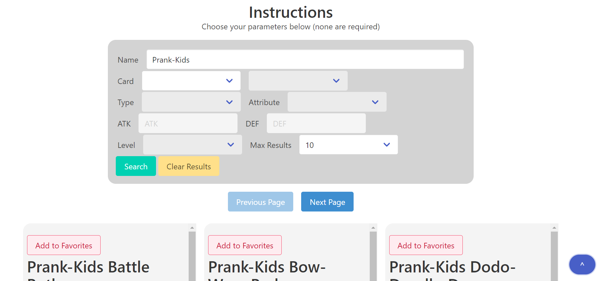

Allen Ko
About Me
I've always been interested in video games, which has led to an interest in game balance and level design. As a Game Design & Development major at Rochester Institute of Technology, I have been slowly building experience in programming languages and game engines so I can better understand the kind of work that goes into making video games. I have knowledge in C#, C++, and Java, as well as HTML/CSS/JavaScript and minimal knowledge of Python. Additionally, in terms of game engines, I have experience in Unity and Unreal.
My Works
Commander Finder for Magic: The Gathering's Commander Format
The EDH Commander Finder is a Web application that uses the Scryfall API, an API for Magic: The Gathering. The application allows you to set parameters such as name, colors, and mana cost, and returns the possible commanders that fulfill those requirements. Each image is a clickable link that leads to that card's Scryfall entry. The program uses Web storage to remember the last name you inputted. I designed the entire page and wrote the JavaScript for a class assignment, but it was also something that I wanted to be able to use myself, since I play the game. This was the first time I had done something with an API, so figuring out what search terms I wanted was one of the biggest challenges for this project.
Robo Runner: A PixiJS Game

Robo Runner is a Web game that uses PixiJS, a WebGL renderer. The object of the game is to get the highest score you can by avoiding the obstacles that come your way. In between attempts, you can upgrade various stats that will give you more flexibility in achieving a greater score. The project uses PixiJS to render text and sprites, and uses howler.js for in-game sounds. I was responsible for both game logic as well as the sprites as part of a class project. I was able to utilize the various skills from programming in other languages to make the game function on the Web.
Yu-Gi-Oh! Card Finder
The Yu-Gi-Oh! Card Finder utilizes the YGOPRODeck API to access card details from a database. The application allows you to set parameters such as the card name and stats, then searches the API for the cards and displays their cards. The program uses local storage to save the previous parameters and state. Additionally, the application uses Firebase for a community tab where you can see what cards other people have favorited. Now that I have more experience, this is a work that I'm a lot more satisfied with.